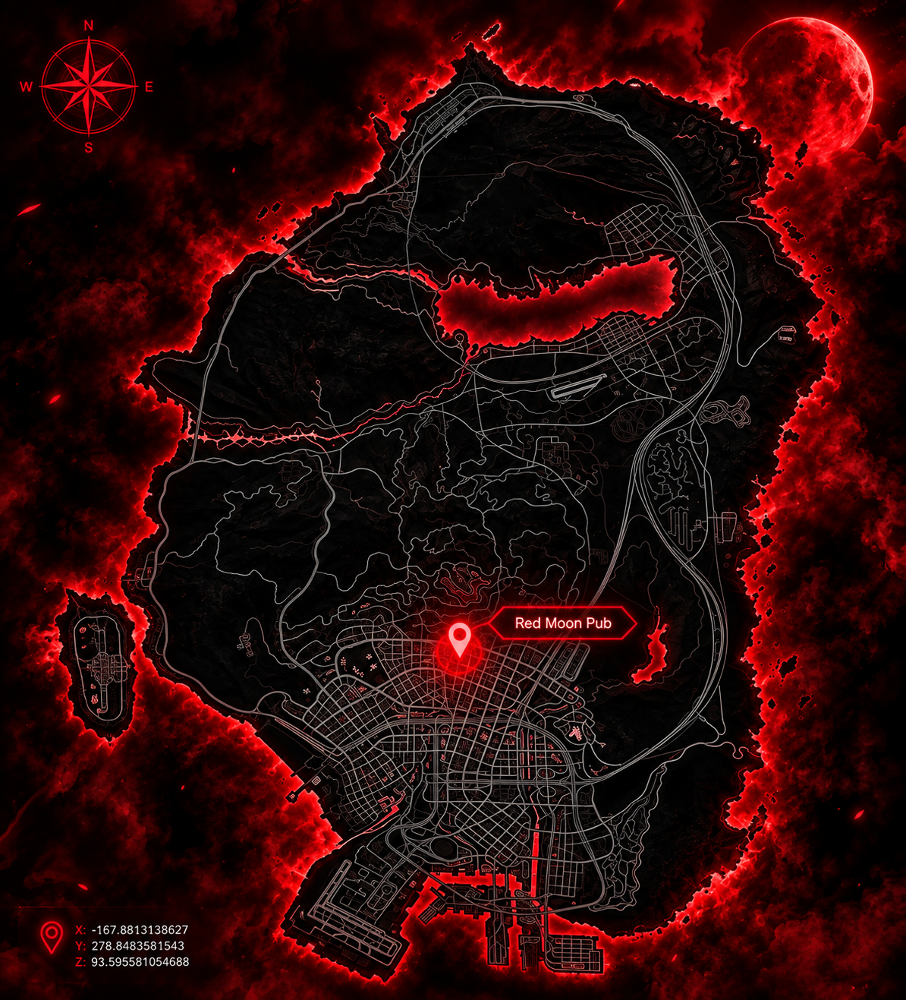

RED MOON / 06
LOKÁCIÓ & GPS
A Red Moon Pub pontos helye SeeCity-ben. A térkép a megadott helyszínt mutatja, a GPS-jel pedig a kocsma valódi pozíciójára került.
RED MOON PUBSEE CITY · FIX HELY
SEE CITYRED MOON PUB · GPS LOCATION
X -167.8813 Y 278.8484 Z 93.5956

N
RED MOON GPS
RED MOON GPS
SEE CITY RP
RED MOON PUB
RED MOON PUB